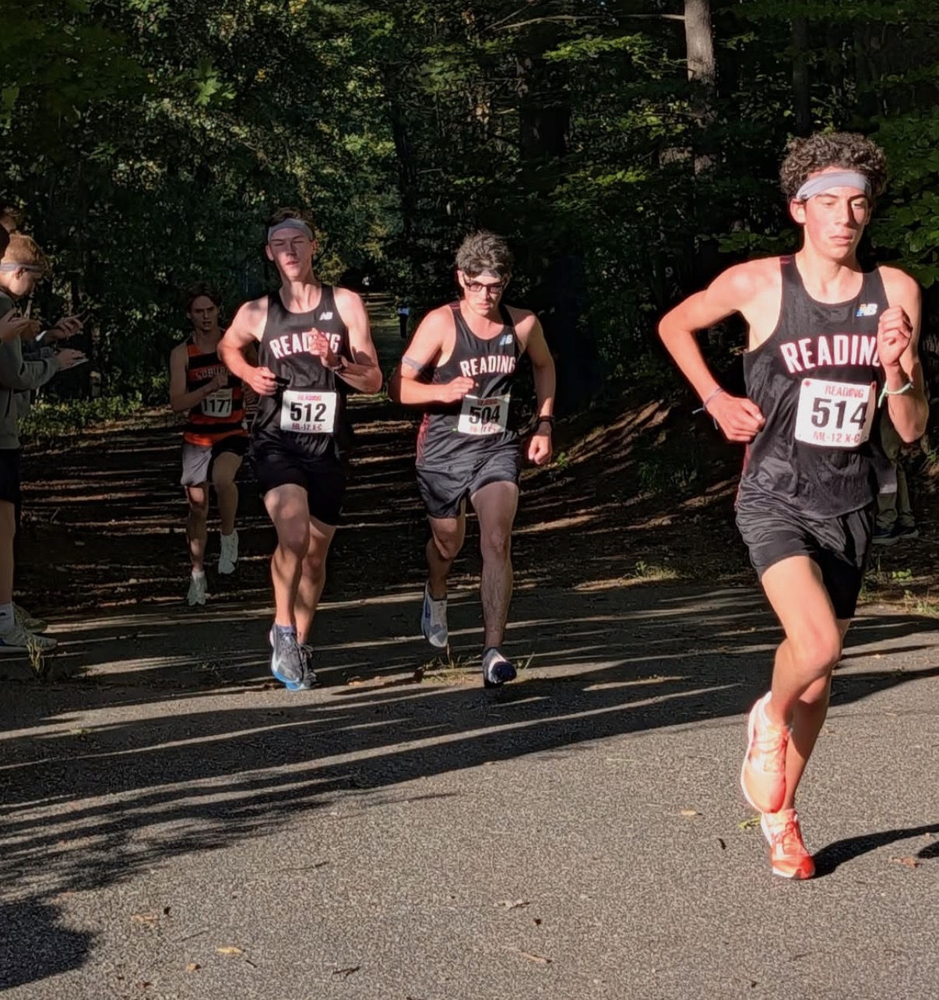

Even though all of the invites this weekend got canceled, there's still lots to unpack from all the dual meets that happened this week. With three major upsets, the competition is heating up going into October, and teams are gearing up for championship season.
#7 St. John’s Prep Upsets #4 BC High (16–44)
Talk about a blowout. What was expected to be one of the biggest dual meets of the season ended with Prep taking five of the top six spots. Although this was clearly not BC High at full strength, any doubt we had about St. John’s Prep has gone away.
Although absent from last week, Leo Seltenrich (16:37) is back and appears to be the team's #1 runner. Although he was the first to cross the finish line, there are multiple members of the team that could take up the mantle. Their spread from 1–5 was only 10 seconds, with Mateo DeOrio (16:42), Liam Callahan (16:42), Henry McDonnell (16:45), and Sam Valentine (16:47) all right behind Seltenrich.
St. John’s Prep now has the tightest pack in the state, only comparable to the boys from North Andover. Their tight spread allows them to work off each other and move past opponents together. Safe to say that this team is definitely moving up in the rankings, especially because this appears to be a slow course. Watch out for St. John’s Prep. With their full lineup together, they can easily compete with some of the top teams in the state, like Concord-Carlisle and Brookline.
We don’t really know what happened to BC High during this race. However, this is definitely not the team that we put at MA #4. First of all, they were without their 1–2 punch, arguably one of the best in the state. Both Colin Kurtz and Owen Geagan never entered the race, putting BC High at a big disadvantage. Although we don’t know why Kurtz never raced, we’re assuming that Geagan is currently injured due to not having been entered in Ocean State.
Their #1 runner was actually Colin Kurtz's younger brother, Nolan Kurtz. When this team is fully healthy, he will probably step up to be their #5 runner, as that was the team's main problem entering the season. Joseph Hayes (16:54) placed seventh overall, and Theo Weiss (17:41) placed 13th. We believe that both of these runners just had a bad day. Both runners' PRs stand around 16:00, and they are both coming off a big runner-up finish in the outdoor All-State 4x800, where they both split below 2:00.
One bad race doesn’t define this team. Once they get their full lineup back, we believe they have the potential to be at the top. Let's see if this team can bounce back against Prep at the Catholic Conference Championships and inside Division 1.
Xaverian Upsets #17 Catholic Memorial (26–31)
Looking back, we were definitely sleeping on Xaverian.
After initially thinking St. John's Prep had treated last week's race as more of a tempo, it's becoming clear that Xaverian's near-upset was legitimate. This week, with #1 runner Jack Weintraub back in the lineup, they backed it up with a huge victory over a talented Catholic Memorial squad.
Weintraub's 1:53.50 800-meter speed translated pretty well to the grass. He won the three-mile race in 14:56, a performance that suggests he's capable of running significantly faster than his previous 16:32 5K PR.
Catholic Memorial answered with Daniel Kaleba and Gerard Stock taking second and third, but Xaverian immediately fought back. Marco Petrino (15:31) and Alex Armstrong (15:34) both finished ahead of CM's Theo Fitzpatrick (15:40). For some perspective, Fitzpatrick has already run 16:35 for 5K this season. Emile Brodeur (15:47) and Catholic Memorial's Finn Rosenbaum (15:59) followed.
But the biggest story for Xaverian was its depth.
The Hawks proceeded to put three more runners across the line before Catholic Memorial's #5. Scott Feeney (16:02), Luke Herman (16:02), and Anders Hallman (16:03) crossed within a second of each other. All three performances suggest they have the ability to break the 17-minute barrier over 5K.
One strong performance can sometimes be an outlier. Xaverian has now given us two. They nearly knocked off St. John's Prep and followed it up by actually beating Catholic Memorial.
That's enough for a major move in our rankings, and it makes Division 1B even more interesting. Xaverian now looks capable of joining teams like Arlington, North Andover, and Natick in what is quickly becoming one of the most competitive divisions in the state.
Speaking of Arlington...
#13 Arlington Upsets #2 Lexington (23–33)
We don’t think that Lexington had the goal of winning this meet, though we think that if they did, Arlington still would’ve given them a good run. We’ve found out that Lexington isn’t at full strength, with a good number of their best returners currently out.
For now, we’ll talk about the good things that came out of Lexington, specifically their top two finishers. Alden Hall (16:25) and Trevor Stevens (16:39) had a 2–3 finish in the race. For Hall, this does look like an all-out effort, but for Stevens, this looks more like a tempo effort. Still, look out for both of these runners, as they are two key runners for the squad.
On to Arlington. This win came from the team placing five of its runners in the top seven spots. Owen Merrill (16:16) won the race overall, getting in front of both Lexington runners. They then showed why they deserve to move up the rankings as well.
Arlington’s Roberto Marrocchelli-Mendez (16:41) placed fourth overall and made his varsity debut this week. He’s only a freshman and adds so much to Arlington's depth that their fifth runner is already at 16:41 for the 5K. Nathan Wilson (16:54), Eli Hanover (17:01), and Evan Jacobson (17:04) rounded out the squad, with Arlington sitting one of its top runners, Zachary Weinberg.
#6 Newton North Beats Weymouth and Milton
Patrick Geagan (15:23) took the overall win here, followed by Milton’s Robert Beato (15:33), about 10 seconds back.
Newton North seems to have treated this meet more like a tempo. A clear example of this is Ryan Costello (16:04) only placing fourth overall. Costello was beaten out by teammate Eddie Powell (16:03), with a lot more Newton North runners right behind them. Reed Smith (16:10), Mathew Gallo (16:11), Eli Billings (16:12), and Will Kenneally (16:12) rounded out this pack.
Some other key performances included Weymouth’s #2 runner, Andrew Himmer (16:05), having a breakout performance to place fifth overall. Newton North’s #2 returner, Lucas Allen (16:24), also made his season debut, placing 11th.
Milton also took the win over Weymouth, placing six runners in front of Weymouth’s #4 runner.
#8 Reading Beats Woburn
Reading sat their top four runners this week, but the rest of their top seven showed how deep this team truly is. Curran Healy (16:42), Colin Carroll (16:44), and Colin Herlihy (16:47) went 1–2–3 against Woburn to take the win.

Reading's Colin Carroll (left), Colin Herlihy (right), and Curran Healy on the way to a 1-2-3 sweep against Woburn.
Keep in mind, not a single one of these runners is near their top three. This is their back-end talent. If Reading can keep this momentum going, they can hope to take back their D1C title from Oliver Ames.
#9 Natick Beats Wellesley and Braintree
Natick's depth was one of the biggest reasons we were high on this team during the preseason, and this week gave us another example of why.
Callum Doyle (16:16) took the individual victory, continuing his strong start to the season. Wellesley's Daniel Goldberg (16:25) and Nate Flynn (16:27) finished second and third, with Goldberg appearing to run alongside Flynn for much of the race.
Natick then answered with Benjamin Gidelson (16:27) and Declan Hava (16:31) in fourth and fifth. It was a little surprising to see Gidelson finish ahead of Hava, although this may simply have been an off day for Hava.
After that, Natick's depth took over.
Kai Vickers-Richards (16:49), Brady Collins (16:51), and Alex Forte (16:52) all finished within three seconds of each other, while Johnathan Pereira followed in 17:07.
And that's still not the end of their lineup.
Conner Chviruk (17:18), Dylan Cooke (17:21), and Sasha Rennie (17:23) give Natick even more options. Cooke in particular has already been an important part of their pack this season.
Wellesley also had some encouraging performances farther back, with five runners finishing between 17:01 and 17:16. That group included breakout performances from Xavier Cortis (17:11), Aleksander Strzelecki (17:12), and Oliver Zinggeler (17:13).
Natick's front runners are good. Its depth might be even better. As the season gets closer to championship racing, that's going to matter.
Belmont Surprises Winchester
What looked like it could’ve been a close meet got completely slammed by the Belmont team. They had their first real opener this week, where they crushed Winchester by going 1–2–3–4.
Belmont’s Noah Geiger took first overall in 16:03. This looks more like a tempo, as he was helping his teammate Ishaan Kanagaraj (16:04), who placed second. Two more Belmont runners then crossed together for third and fourth: Will Olmsted (16:52) and Elias Campisano (16:53).
Although their #5 runner, Paul Son (17:34), is a bit farther back, their top-end talent helps make up for some of those back-end points.
We mentioned this team as one of our sleepers, and they are proving why we thought that. This team should be moving its way up the rankings over the next few weeks.
Even without any invitationals this weekend, this week still gave us our biggest shakeup of the season so far. St. John’s Prep proved they belong with some of the top teams in the state, while Arlington and Xaverian both pulled off upsets that will completely change the rankings. At the same time, teams like Newton North, Reading, and Natick continued to show just how much depth they have. With September coming to an end, the picture is starting to become clearer, but there are still plenty of questions left to answer as teams head into October and championship season.